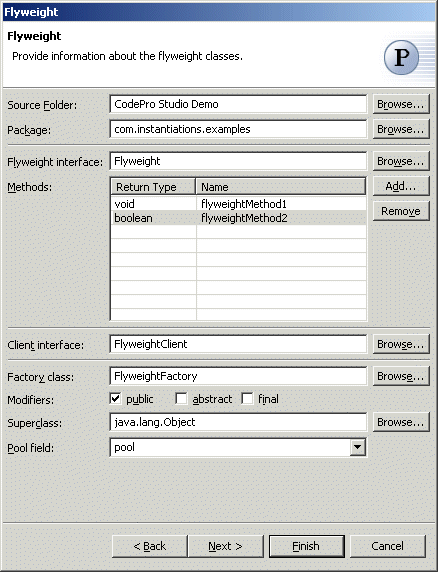
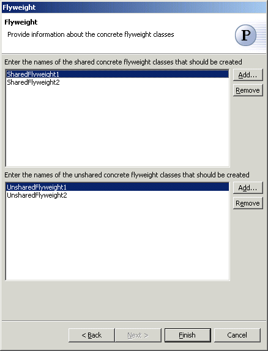

Flyweight Pattern
The  Flyweight Pattern uses sharing to support large numbers of fine-grained
objects efficiently. A flyweight is a shared object that
can be used in multiple contexts simultaneously. The flyweight acts as an
independent object in each context - it's indistinguishable from an instance
of the object that's not shared. Flyweights cannot make assumptions about
the context in which they operate. The key concept here is the distinction
between intrinsic and extrinsic state.
Intrinsic state is stored in the flyweight; it consists of information
that's independent of the flyweight's context, thereby making it sharable.
Extrinsic state depends on and varies with the flyweight's context and
therefore can't be shared. Client objects are responsible for passing
extrinsic state to the flyweight when it needs it.
Flyweight Pattern uses sharing to support large numbers of fine-grained
objects efficiently. A flyweight is a shared object that
can be used in multiple contexts simultaneously. The flyweight acts as an
independent object in each context - it's indistinguishable from an instance
of the object that's not shared. Flyweights cannot make assumptions about
the context in which they operate. The key concept here is the distinction
between intrinsic and extrinsic state.
Intrinsic state is stored in the flyweight; it consists of information
that's independent of the flyweight's context, thereby making it sharable.
Extrinsic state depends on and varies with the flyweight's context and
therefore can't be shared. Client objects are responsible for passing
extrinsic state to the flyweight when it needs it.
Wizard

| Option | Description | Default |
| Source folder | Enter a source folder for the new class. Either type a valid source folder path or click Browse to select a source folder via a dialog. | The source folder of the element that was selected when the wizard was started. |
| Package | Enter a package to contain the new class. Either type a valid package name or click Browse to select a package via a dialog. | The package of the element that was selected when the wizard was started. |
| Flyweight interface | Type or click Browse to select a flyweight interface class | <Flyweight> |
| Method | Click Add to enter return types and names of sample methods that should be created in the flyweight classes | <blank> |
| Client interface | Type or click Browse to select a client interface class | <FlyweightClient> |
| Factory class | Type or click Browse to select a flyweight factory class. | <FlyweightFactory> |
| Modifiers | Select one or more access modifiers for the new class.
|
public, abstract, final |
| Superclass | Type or click Browse to select a superclass for the flyweight factory class. | <java.lang.Object> |
| Pool field | Type or select the name of the field that will contain the pool of flyweight instances | <pool> |

| Option | Description | Default |
| Concrete flyweight classes | Click Add to enter names of concrete flyweight classes that should be created. | <blank> |
| Unshared concrete flyweight classes | Click Add to enter names of unshared concrete flyweight classes that should be created. | <blank> |
Applicability
Use the Flyweight pattern when
- an application uses a large number of objects.
- storage costs are high because of the sheer quantity of objects.
- most object state can be made extrinsic.
- many groups of objects may be replaced by relatively few shared
objects once extrinsic state is removed.
- the application doesn't depend on object identity. Since flyweight objects may be shared, identity tests will return true for conceptually distinct objects
Additional Resources
http://c2.com/cgi/wiki?FlyweightPattern
http://www.wikipedia.org/wiki/flyweight_pattern